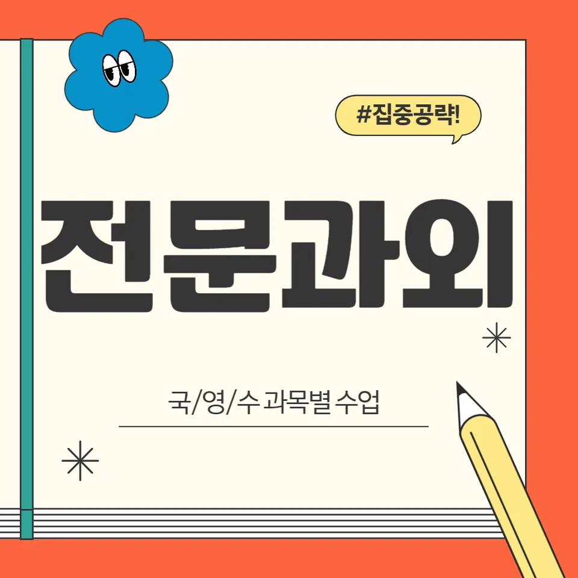

PageType : DONG
URL : /경기도과외/부천시과외/오정구과외/어원동과외/
지역 학습환경과 학생들의 변화
어원동과외를 시작한 학생들은 ‘집에서 공부가 끝나는 느낌’이 먼저 바뀝니다. 거실에서 습관처럼 펼쳐두던 문제집이 아니라, 수업에서 정리한 목표가 바로 실행으로 이어지면서 집중 시간이 자연스럽게 늘어나는 경우가 많습니다. 처음에는 과제를 미루던 학생도 학습 흐름을 눈으로 확인하게 되면, 숙제의 분량보다 ‘오늘 해야 하는 한 가지’를 선명하게 잡습니다.
지역 학습환경은 조용함만의 문제가 아닙니다. 수업 이동 동선, 학원 선택지, 스스로 시간을 쓰는 방식이 함께 맞물리면서 공부 리듬이 바뀝니다. 어원동과외에서는 하루 중 집중 가능한 구간을 찾아 그 시간에 과목을 배치하고, 같은 유형 문제를 반복할 때도 속도보다 정확도를 먼저 잡도록 도와줍니다. 그래서 학생은 ‘풀 수는 있는데 자꾸 실수하는 상태’에서 벗어나고, 오답이 쌓이는 속도가 줄어듭니다.
학부모가 많이 고민하는 부분
학부모가 가장 자주 묻는 질문은 “성적이 오르기 전에 공부가 먼저 무너지는 이유가 뭘까요?”입니다. 학교 수행평가와 단원평가가 몰리는 시기에 학생이 버티지 못하고, 밤에 뒤늦게 몰아붙이면서 결과만 흔들리는 패턴이 생깁니다. 어원동과외는 이런 구간을 단순한 응원이 아니라 학습 점검 방식으로 정리해, 어떤 과목에서 어떤 실수가 반복되는지부터 확인합니다.
또 한 가지는 ‘선행을 잘했는데 왜 성적이 그대로일까요’입니다. 진도를 빠르게 나간 학생일수록, 시험에서 요구하는 사고 방식이나 서술형 대응이 늦어지는 경우가 있습니다. 따라서 부모님은 “더 풀게 해주세요”보다 “시험이 요구하는 형태로 다시 맞춰주세요”를 기대하게 됩니다. 수업에서는 개념 이해-문제 적용-피드백의 순서가 고정되면서, 학습 결과를 예측 가능하게 만들어 줍니다.
학년이 올라갈수록 달라지는 공부
초반에는 문제를 많이 푸는 방식이 잘 먹히지만, 학년이 올라가면서 성적을 좌우하는 요소가 달라집니다. 중학교에서 고등학교로 넘어가면 단순 계산이나 암기가 아니라, 시간 안에 정답을 구성하는 힘이 중요해집니다. 어원동과외를 이용하는 학생들 중에는 중학교 말부터 공부 계획의 단위를 바꿔 성적이 안정화되는 사례가 많습니다.
예를 들어 학년이 바뀌면 학생이 ‘공부를 시작하는 시간’부터 달라져야 합니다. 같은 시간 공부해도, 시작이 늦으면 집중이 끊기고 복습이 남지 않습니다. 그래서 수업에서는 주간 단위 목표를 세분화하고, 시험 전에는 복습 우선순위를 정해 체감 난이도를 낮춥니다. 이 과정에서 학생은 공부량 경쟁이 아니라 자기 관리 경쟁을 배우게 됩니다.
학교생활과 내신 준비
학교생활은 시험 문제에서 바로 드러납니다. 수업 중 필기 습관이 흐트러지면 단원 정리 단계에서 시간이 새고, 발표·수행평가 비중이 늘어날수록 준비의 순서가 바뀌어야 합니다. 어원동과외는 내신을 ‘시험 직전 벼락’으로 접근하지 않게 만드는 데 초점을 둡니다. 수업 시간에 정리한 내용을 학교 수업 흐름과 연결해, 학생이 필기-복습-문제 적용을 끊기지 않게 합니다.
특히 내신은 서술형과 사고 과정이 포함될 때 변별력이 생깁니다. 학생이 답을 아는 것과, 시험장에서 글로 정확히 표현하는 것은 다른 문제입니다. 그래서 학습 태도를 ‘맞히기’에서 ‘과정 전달’로 바꾸는 훈련이 들어갑니다. 그 결과 내신 준비가 계획대로 움직이고, 시험이 다가와도 당황하는 시간이 줄어듭니다.
자기주도학습이 중요한 이유
자기주도학습은 거창한 의지가 아니라, 매일의 선택이 쌓여 만들어집니다. 어원동과외에서는 학생이 스스로 정한 목표를 ‘실행 여부’로 확인하게 합니다. 예를 들어 “오늘 영어 단어 30개”처럼 숫자가 명확하면, 학생은 성취감을 빠르게 느끼고 다음 과제로 넘어갈 동력이 생깁니다. 반대로 목표가 흐릿하면 실패가 쌓여 자신감이 먼저 꺼집니다.
학생이 자기주도학습을 시작하면 공부 시간도 달라집니다. 시작이 빠르고, 중간에 멈추는 구간이 줄어들며, 복습이 자연스럽게 들어옵니다. 학부모 입장에서도 매번 “했어?”라고 묻지 않아도 되는 상태가 됩니다. 어원동과외의 역할은 학생의 습관이 유지되도록 점검 기준을 함께 설계하는 데 있습니다.
공부 습관이 성적에 미치는 영향
성적은 하루 성취가 아니라 습관의 누적으로 바뀝니다. 어떤 학생은 문제를 잘 풀지만 오답 노트가 정리되지 않아 다음 시험에서 같은 실수를 반복합니다. 또 다른 학생은 공부 시간이 길어도 집중이 얕아, 같은 단원을 여러 번 다시 보게 됩니다. 이런 차이가 결국 시험 당일 체력과 시간 사용 방식으로 연결됩니다. 어원동과외는 이런 패턴을 빠르게 발견하고, 학생의 공부습관을 ‘기록-점검-수정’으로 전환합니다.
특히 시험 전에는 휴식이 늘어야 하는데, 습관이 무너지면 쉬는 날에도 머릿속이 복잡해집니다. 그래서 수업에서는 리마인드 자료, 복습 체크리스트, 오답 유형 분류를 활용해 학생이 스스로 흔들리지 않게 만듭니다. 시간이 지나면 학생은 공부를 ‘버티는 일’이 아니라 ‘관리하는 일’로 인식하게 됩니다.
체크해야 할 학습 포인트
- 어떤 과목에서 단원 이해가 끊겼는지, 시험 전 오답 유형으로 추적하기
- 학교 수업에서 필기한 내용이 과제로 연결되는지(복습이 남지 않는지) 확인
- 시간관리: 문제 풀이 시간을 재고, 멈추는 구간의 원인을 기록하기
- 내신 대비: 서술형·수행평가 대비가 단원별로 분산돼 있는지 점검하기
이 포인트는 수업을 듣는 동안만이 아니라, 방학과 시험기간에도 그대로 작동해야 합니다. 어원동과외에서는 점검 기준을 학생이 이해하는 언어로 정리해, 학습이 다시 시작될 때마다 같은 실수를 줄이도록 돕습니다. 결국 체크가 쌓이면 성적이 흔들리는 주기가 짧아지고, 다음 시험에 대한 불안도 완화됩니다.
자주 묻는 질문
어원동과외를 시작하면 성적이 언제부터 보이나요?
기본 점검과 습관이 잡히는 시점부터 변화가 먼저 보이는 편입니다. 보통 첫 단원에서 오답이 줄고, 시험 대비가 빨라지면서 1~2회 시험 주기 안에 체감이 생깁니다.
숙제만 하면 되는데 왜 공부습관을 따로 봐야 하나요?
숙제 양보다 ‘정리 방식’이 성적을 결정하는 경우가 많습니다. 오답 기록, 복습 타이밍, 시험형 문제로 재구성하는 과정이 함께 있어야 합니다.
학년이 높을수록 수업이 어떻게 달라지나요?
난이도 자체보다 시간 사용과 서술형 대응이 더 중요해집니다. 어원동과외에서는 목표를 주간 단위로 쪼개고, 시험에서 점수를 만드는 순서를 훈련합니다.
내신 대비는 무엇부터 우선으로 잡나요?
단원별 중요도와 학교 진도 흐름을 기준으로 우선순위를 정합니다. 수행평가나 단원평가 일정이 겹치는 구간도 미리 설계해 준비 공백을 줄입니다.
자기주도학습이 잘 안 되는 학생도 가능한가요?
가능합니다. 시작이 느린 학생일수록 ‘작은 목표-즉시 피드백-다음 실행’ 구조가 효과적이며, 어원동과외에서는 그 흐름을 지속되게 만드는 방식으로 지도합니다.
